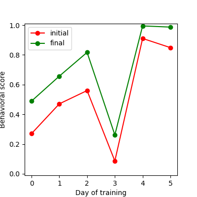

Exercises 3.03 - Working with files#
First, download the file 3.03_files_data.zip from the Files section on StudIP and extract its contents. You should get a new directory with a bunch of subdirectories and files.
Put this notebook in the same directory and open the notebook from that directory.
A common data analysis workflow#
In this exercise, you will implement step-by-step a common workflow for analyzing and aggregating experimental datasets:
Experimental data were collected over multiple days, with the data for each day in a separate subdirectory in
behavioral_data.During the day, the animal was trained. The animal was tested in 40 trials before (“initial”) and after (“final”) training and the resulting behavioral scores were saved in separate files in each day’s folder.
We want to:
compute the average initial and final score for each days
plot the initial and final average scores across days.
To do that we need to:
Discover the data files
Load and process the data files for each day and epoch (initial/final)
Save the processed results in a file
Load and plot the results
Exercise 1 - processing and generating file paths#
The behavioral data is organized in the following folder structure:
behavioral_data/DATENAME/DATA_FILE_NAME.SUFFIX
Familiarize yourself with how the directory is organized using the windows file explorer or mac file finder.
We want to process the data, and save the results into the following path:
behavioral_results/DATENAME/DATA_FILE_NAME.SUFFIX. In exercise one, you will generate the paths for the results file from the paths of the data file.
To make this concrete: Say the data file is at ‘behavioral_data/20230914/final_behavioral_scores.csv’. Generate a path so we can save the results file to ‘behavioral_results/20230914/final_behavioral_scores.txt’. What we need to change is the top directory from ‘behavioral_data’ to ‘behavioral_results’ and the extension from ‘csv’ to ‘txt’. We keep the names of the experiment directory and of the data file.
1) Take the path for the data file apart:#
You are given the following path: ‘behavioral_data/20230914/final_behavioral_scores.csv’
As a first step, use path manipulations to extract the following information form the path:
the parent directory (‘behavioral_data’)
the directory for the experiment (‘20230914’)
the stem of the data file (‘final_behavioral_scores’)
the suffix of the data file (‘.csv’)
path = 'behavioral_data/20230914/final_behavioral_scores.csv'
# your solution
import os.path
pathparts = os.path.splitext(path)
suffix = pathparts[1]
pathparts = os.path.split(pathparts[0])
stem = pathparts[1]
pathparts = os.path.split(pathparts[0])
directory = pathparts[1]
pathparts = os.path.split(pathparts[0])
parent = pathparts[1]
print(suffix, stem, parent)
path, os.path.dirname(path)
.csv final_behavioral_scores behavioral_data
('behavioral_data/20230914/final_behavioral_scores.csv',
'behavioral_data/20230914')
2) Reassemble the parts to form the path for the results file:#
For the data file in ‘behavioral_data/20230914/final_behavioral_scores.csv’, the results should be in ‘behavioral_results/20230914/final_behavioral_scores.txt’.
# your solution
behavioral_results/20230914/final_behavioral_scores.txt
Exercise 2 - Discovering files#
To process all data files in the folder behavioral_data, we first need to discover them, using glob.
1) List all files in a folder#
The subfolder 20230914 in behavioral_data contains a bunch of files. Use glob to list all files in that folder:
# your solution
from glob import glob
glob('behavioral_data/20230914/*')
['behavioral_data/20230914/initial_behavioral_scores.csv',
'behavioral_data/20230914/final_behavioral_scores.csv',
'behavioral_data/20230914/broken.msg']
2) List only the data files (ending in .csv) in the sub folder#
The listing above yielded 3 files - two data files ending in ‘.csv’ and one garbage file called ‘broken.msg’. We only want to list the data files - not the garbage file.
Modify your code that uses glob above to list only the ‘.csv’ files, but no other files that might exist in that folder.
# your solution
glob('behavioral_data/20230914/*.csv')
['behavioral_data/20230914/initial_behavioral_scores.csv',
'behavioral_data/20230914/final_behavioral_scores.csv']
3) List all data files (ending in csv) in all sub folders#
We want to process all data files - from all days in behavioral_results, not just the ones from the day 20230914.
Modify your code that uses glob above to list all the csv files in all subfolders in behavioral_data. Use a single command - no for loop!
# your solution
glob('behavioral_data/*/*.csv')
['behavioral_data/20230913/initial_behavioral_scores.csv',
'behavioral_data/20230913/final_behavioral_scores.csv',
'behavioral_data/20230914/initial_behavioral_scores.csv',
'behavioral_data/20230914/final_behavioral_scores.csv',
'behavioral_data/20230915/initial_behavioral_scores.csv',
'behavioral_data/20230915/final_behavioral_scores.csv',
'behavioral_data/20230912/initial_behavioral_scores.csv',
'behavioral_data/20230912/final_behavioral_scores.csv',
'behavioral_data/20230917/initial_behavioral_scores.csv',
'behavioral_data/20230917/final_behavioral_scores.csv',
'behavioral_data/20230916/initial_behavioral_scores.csv',
'behavioral_data/20230916/final_behavioral_scores.csv']
Exercise 3 - Manipulate file names in a list#
Now that we have a listing of the data files, we can now take apart the names of the data files and generate the names for results files. We will basically apply what we have done in exercises 1 + 2 above to all paths, using a for loop.
1) Take the path for the data file apart:#
As a first step, take the first file in the list data_files.
Use path manipulations to extract the following information form the path:
the parent directory (‘behavioral_data’)
the directory for the experiment (‘20230912’)
the stem of the data file (‘final_behavioral_scores)
the suffix of the data file (‘.csv’)
data_files = ['behavioral_data/20230912/final_behavioral_scores.csv', 'behavioral_data/20230912/initial_behavioral_scores.csv', 'behavioral_data/20230913/final_behavioral_scores.csv', 'behavioral_data/20230913/initial_behavioral_scores.csv', 'behavioral_data/20230914/final_behavioral_scores.csv', 'behavioral_data/20230914/initial_behavioral_scores.csv', 'behavioral_data/20230915/final_behavioral_scores.csv', 'behavioral_data/20230915/initial_behavioral_scores.csv', 'behavioral_data/20230916/final_behavioral_scores.csv', 'behavioral_data/20230916/initial_behavioral_scores.csv', 'behavioral_data/20230917/final_behavioral_scores.csv', 'behavioral_data/20230917/initial_behavioral_scores.csv']
# your solution
for data_file in data_files:
...
behavioral_data/20230912/final_behavioral_scores.csv
['behavioral_data', '20230912', 'final_behavioral_scores.csv'] 20230912 final_behavioral_scores.csv final_behavioral_scores .csv
2) Reassemble the parts from the first file name form the path for the results file#
Now take the file parts and reassemble/modify them to generate the path for a results file.
For the data file in ‘behavioral_data/20230912/final_behavioral_scores.csv’, the results should be in ‘behavioral_results/20230912/final_behavioral_scores.txt’.
# your solution
behavioral_results/20230912/final_behavioral_scores.txt
3) Apply steps 1 + 2 to all files in the list#
Now take apart the names of the data files and reassemble them to the names of the results files for files in data_files.
Collect the names of the results files in a new list called results_file_names.
mport numpy as np
from glob import glob
initial_data = glob('behavioral_data\\*\\initial_behavioral_scores.csv')
final_data = glob('behavioral_data\\*\\final_behavioral_scores.csv')
mean = []
for i_path, f_path in zip(initial_data, final_data):
trial_mean = []
trial_mean.append(np.mean(np.loadtxt(i_path)))
trial_mean.append(np.mean(np.loadtxt(f_path)))
mean.append(trial_mean)
print(np.array(mean)) #WHY are mine in a different order?
[array([0.22274863, 0.40350196, 0. , 0.56353078, 0.519613 ,
0.21905378, 0.37689013, 0.2829951 , 0.13681079, 0.28961837,
0.44172765, 0.21148458, 0.21238843, 0.26258821, 0.34724939,
0.48806321, 0.16922012, 0.35973271, 0.31101933, 0. ,
0.20511392, 0.25294518, 0.26840496, 0.32933391, 0. ,
0.28270925, 0.16205407, 0.0350935 , 0.36238274, 0.3975466 ,
0.16612496, 0.41540938, 0.21141392, 0.2860815 , 0.09187684,
0.53908118, 0. , 0.2597579 , 0.39085327, 0. ]),
array([0. , 0.01093329, 0. , 0.4350677 , 0. ,
0. , 0.15072035, 0. , 0. , 0. ,
0.16286351, 0.598052 , 0.03538485, 0. , 0.15976458,
0. , 0.02021738, 0.3187503 , 0. , 0.02725631,
0. , 0. , 0.08914261, 0. , 0. ,
0. , 0. , 0. , 0. , 0. ,
0. , 0.5828417 , 0. , 0.05318163, 0.11761113,
0.36490847, 0.1504643 , 0. , 0.02500244, 0.16058814]),
array([0.30476421, 0.54706595, 0.42106999, 0.54563745, 0.60819667,
0.68543561, 0.60032747, 0.30937317, 0.65985721, 0.18084705,
0.45592978, 0.39197097, 0.29820016, 0.57361109, 0.44445724,
0.64497579, 0.22792242, 0.61605198, 0.55799002, 0.49608403,
0.23853157, 0.43303765, 0.2172209 , 0.12789134, 1. ,
0.63681022, 0.77376548, 0.40349778, 0.591033 , 0.59123605,
0.57525264, 0.47560992, 0.43695874, 0.13006462, 0.57669068,
0.54558282, 0.66131446, 0.42929299, 0.76530203, 0.40041652]),
array([0.17763268, 0.20569533, 0.43117575, 0.53705323, 0.12402693,
0. , 0.56680886, 0.52947141, 0.10949866, 0.31272212,
0.32046656, 0.36656886, 0.27605199, 0.57667406, 0. ,
0.48520599, 0.32011799, 0.17071618, 0.51838287, 0. ,
0.51538037, 0.32151951, 0. , 0.33327314, 0.14897839,
0.87132372, 0.68383318, 0.33517247, 0.04518654, 0.07914635,
0.14373759, 0.08494137, 0. , 0.07725693, 0.15595513,
0.09577903, 0.05035251, 0. , 0.86260956, 0. ]),
array([0.48316618, 0.60391292, 0.6503088 , 0.92523949, 0.81993303,
0.49381824, 0.78570357, 0.79748078, 0.49810571, 0.65691386,
0.36659934, 0.73008134, 0.62238446, 0.44999965, 0.55863817,
0.71499187, 0.58284176, 0.72492114, 0.76711062, 0.53492616,
0.62295489, 1. , 0.69518426, 0.53386187, 0.68507707,
0.45190185, 0.86379101, 0.73671747, 0.85596773, 0.82536323,
0.74004941, 0.8375849 , 0.70692894, 0.56463183, 0.50441417,
0.6003042 , 0.25742364, 0.97933241, 0.3893221 , 0.66222674]),
array([0.1111432 , 0.65954092, 0.30791344, 0.11131992, 0.45620591,
0.61412554, 0.48535991, 0.54935641, 1. , 0.63028022,
0.80794008, 0. , 0.51626338, 0.61852051, 0.33388023,
0.20600513, 0.52413004, 0.34634564, 0.2765611 , 0.71237514,
0.75889154, 0.50065733, 0.31144304, 0.55359268, 0.63236461,
0.58265549, 0.06165891, 0.34049556, 0.51478333, 0.5805551 ,
0.66519549, 0.61459259, 0.14142038, 0.24814478, 0.11964271,
0.87611916, 0.47010245, 0.56329107, 0.68325727, 0.34274939]),
array([1. , 0.61981482, 0.53777268, 0.9196621 , 0.87463226,
0.85178469, 0.88042758, 0.6015733 , 0.6822168 , 1. ,
1. , 0.75468671, 1. , 0.69653395, 0.77976973,
0.92373868, 0.67583335, 0.79367824, 0.84615481, 0.80910893,
1. , 0.97380113, 0.69178378, 0.76141156, 0.90501111,
0.86384483, 0.74370841, 0.94579228, 1. , 0.76981355,
1. , 0.60472103, 0.60658346, 0.95832329, 0.73591413,
0.70884005, 0.83110199, 0.76210658, 0.92951117, 0.63244009]),
array([0.29560818, 0.1186016 , 0.60443866, 0.54883335, 0.58506897,
0.76223664, 0.47040613, 0.71969862, 0.75331286, 0.54128897,
0.55412012, 0.75960607, 0.63931274, 0.66477212, 0.03139933,
0.63962998, 0.71913648, 0.59113006, 0.7089771 , 1. ,
0.64634111, 0.79133357, 0.41250112, 0.41191455, 0.50500372,
0.37008773, 0.62309972, 0.39154233, 0.58125079, 0.26571414,
0.21194993, 0.45608455, 0.35823322, 0.46176721, 0.47197631,
0.53718438, 0.8863695 , 0.96725401, 0.80633831, 0.53513139]),
array([1. , 0.86737891, 1. , 0.97889818, 1. ,
1. , 1. , 1. , 1. , 0.87947406,
1. , 1. , 1. , 1. , 1. ,
1. , 1. , 1. , 1. , 1. ,
1. , 1. , 1. , 1. , 0.86151747,
1. , 1. , 1. , 0.88734937, 1. ,
1. , 1. , 1. , 1. , 1. ,
1. , 1. , 1. , 1. , 1. ]),
array([0.73212022, 1. , 0.85248775, 0.3466192 , 0.97495511,
0.96234612, 1. , 0.86208731, 0.66161464, 1. ,
1. , 0.37482099, 1. , 0.76677575, 1. ,
0.7316653 , 1. , 0.87354217, 0.97155102, 0.81990318,
0.72139785, 0.84182835, 0.98294973, 0.92939818, 1. ,
0.93140155, 0.98384094, 1. , 0.8415316 , 0.95888959,
0.6742148 , 0.83548941, 1. , 0.90292443, 1. ,
0.55876803, 0.47478864, 0.90188138, 0.48259033, 1. ]),
array([1. , 1. , 1. , 1. , 1. ,
0.92703209, 1. , 1. , 1. , 1. ,
1. , 1. , 1. , 1. , 1. ,
1. , 1. , 1. , 1. , 1. ,
1. , 1. , 1. , 1. , 1. ,
1. , 1. , 1. , 1. , 1. ,
1. , 1. , 1. , 1. , 1. ,
1. , 0.95556158, 0.90377645, 1. , 1. ]),
array([0.80421861, 1. , 1. , 0.92497349, 1. ,
0.50626941, 0.81639065, 0.86057039, 1. , 0.90271075,
1. , 0.91328553, 1. , 0.8479514 , 1. ,
0.96136739, 1. , 0.90175127, 0.75336296, 0.96727063,
1. , 0.77053049, 0.64265216, 0.94800307, 1. ,
0.76104009, 0.88902915, 1. , 0.94233104, 1. ,
1. , 1. , 1. , 1. , 1. ,
0.78677571, 0.77138423, 0.74618401, 1. , 1. ])]
Exercise 4 - Processing files#
We have a list of all data files in the folder behavioral_data. Let’s process the data.
1) Load data from a single file#
As a first step, take the first file in the list data_files.
Load the data from the file using np.loadtxt.
data_files = ['behavioral_data/20230912/final_behavioral_scores.csv', 'behavioral_data/20230912/initial_behavioral_scores.csv', 'behavioral_data/20230913/final_behavioral_scores.csv', 'behavioral_data/20230913/initial_behavioral_scores.csv', 'behavioral_data/20230914/final_behavioral_scores.csv', 'behavioral_data/20230914/initial_behavioral_scores.csv', 'behavioral_data/20230915/final_behavioral_scores.csv', 'behavioral_data/20230915/initial_behavioral_scores.csv', 'behavioral_data/20230916/final_behavioral_scores.csv', 'behavioral_data/20230916/initial_behavioral_scores.csv', 'behavioral_data/20230917/final_behavioral_scores.csv', 'behavioral_data/20230917/initial_behavioral_scores.csv']
# your solution
import numpy as np
data = np.loadtxt(data_files[0])
data
array([0.22274863, 0.40350196, 0. , 0.56353078, 0.519613 ,
0.21905378, 0.37689013, 0.2829951 , 0.13681079, 0.28961837,
0.44172765, 0.21148458, 0.21238843, 0.26258821, 0.34724939,
0.48806321, 0.16922012, 0.35973271, 0.31101933, 0. ,
0.20511392, 0.25294518, 0.26840496, 0.32933391, 0. ,
0.28270925, 0.16205407, 0.0350935 , 0.36238274, 0.3975466 ,
0.16612496, 0.41540938, 0.21141392, 0.2860815 , 0.09187684,
0.53908118, 0. , 0.2597579 , 0.39085327, 0. ])
2) Compute the mean#
Compute the mean of the data loaded from the first file
# your solution here
np.mean(data)
np.float64(0.2618604801587121)
3) Load data from all files, compute the means and collect the means in a list#
Now let’s apply steps 1+2 to all data files using a for loop:
load the data from each file using
np.loadtxtcompute the average of the values in each file
collect all results in a list
data_files = glob('behavioral_data/*/*.csv')
# your solution
all_the_means = []
for data_file in data_files:
print(data_file)
data = np.loadtxt(data_file)
the_mean = np.mean(data)
all_the_means.append(the_mean)
all_the_means
behavioral_data/20230913/initial_behavioral_scores.csv
behavioral_data/20230913/final_behavioral_scores.csv
behavioral_data/20230914/initial_behavioral_scores.csv
behavioral_data/20230914/final_behavioral_scores.csv
behavioral_data/20230915/initial_behavioral_scores.csv
behavioral_data/20230915/final_behavioral_scores.csv
behavioral_data/20230912/initial_behavioral_scores.csv
behavioral_data/20230912/final_behavioral_scores.csv
behavioral_data/20230917/initial_behavioral_scores.csv
behavioral_data/20230917/final_behavioral_scores.csv
behavioral_data/20230916/initial_behavioral_scores.csv
behavioral_data/20230916/final_behavioral_scores.csv
[np.float64(0.2708178821903651),
np.float64(0.4894819412043526),
np.float64(0.47072198956329847),
np.float64(0.6570028706902653),
np.float64(0.5599663891082376),
np.float64(0.8168024268485145),
np.float64(0.08656876767920035),
np.float64(0.2618604801587121),
np.float64(0.9104513105983869),
np.float64(0.9946592530266862),
np.float64(0.8488095892472007),
np.float64(0.9868654497357406)]
4) Load data from all files, compute the means and collect the means in a 2D numpy array#
The goal of our analysis is the compare the intial and final score for each data, to see whether our animal made progress. Saving all results in a simple list is not very useful, since we do not now which value in the list corresponds to which day and which epoch (initial or final).
Let’s arrange the data in a 2D numpy array:
rows are files
first column - initial scores
second column - final scores
Modify the code from above to:
load the data from each file using
np.loadtxtcollect all results in a 2D numpy array structured as explained above
5) Save the results to a file#
You are given a 2D numpy array with results (first column - initial scores, second column - final scores, rows are files).
Save the array to a text file in the folder behavioral_results as the file scores.txt
results = [[0.27081788, 0.48948194],
[0.47072199, 0.65700287],
[0.55996639, 0.81680243],
[0.08656877, 0.26186048],
[0.91045131, 0.99465925],
[0.84880959, 0.98686545]]
results = np.asarray(results)
print(results)
# your solution
[[0.27081788 0.48948194]
[0.47072199 0.65700287]
[0.55996639 0.81680243]
[0.08656877 0.26186048]
[0.91045131 0.99465925]
[0.84880959 0.98686545]]
Exercise 5 - load the results from the file you just saved and plot the results#
Now load the results from the file and plot them.
Generate a single plot, with the initial results as a red line, and the final results as a green line.
Save the plot to a file scores.png in the folder behavioral_results.
Roughly like so:

# your solution here